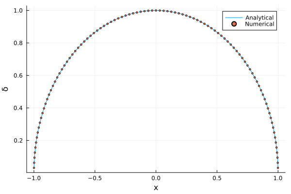

GaussChebyshevFracture


A set of numerical methods (Gauss-Chebyshev quadrature) for coupled fracture problems
Documentation for GaussChebyshevFracture.
Overview
The notation and algorithms implemented were drawn from the following reference:
- Viesca, R.C. and Garagash, D. Numerical methods for coupled fracture problems. Journal of the Mechanics and Physics of Solids. 113, 13-34, 2018. doi:10.1016/j.jmps.2018.01.008.
This package provides utilities to solve crack problems which are represented as integral equations of the (non-dimensional) form:
\[\sigma\left(x\right) = \sigma_{0}\left(x\right) + \frac{1}{\pi} \int_{-1}^{+1} K\left(x - s\right) \frac{d\delta}{ds}\, ds.\]
where $x$ is the coorditate along which a straight crack lies, $\sigma$ is the stress component whose traction is oriented eigher normal or parallel to the crack face, $\delta$ is the relative displacement (difference in displacement of each side of the crack face, opening or slip) and $\sigma_{0}$ is the background stress or the stress in the absence of relative displacement. $K\left(\xi\right)$ is a kernel whose most singular term will be $\frac{1}{\xi}$.
This formulation arise in problems of in-plane, anti-plane, or axisymmetric rupture (opening or sliding) of a linear elastic material. For a non-exhaustive list of problems, we refer to the tests.
Installation
You can install GaussChebyshevFracture directly from the Pkg REPL:
pkg> add GaussChebyshevFractureIllustrative example
For this example, let's look at a crack subject to uniform stress drop, as described in section 3.1 of Viesca and Garagash (2018).
Let's consider a traction-free crack of length $2a$ under a uniform far-field loading $\sigma_{0}$. The dimensional form of the problem is
\[\sigma\left(x\right) = \sigma_{0} - \frac{\mu^{\prime}}{2 \pi} \int_{-a}^{+a} \frac{1}{x - s} \frac{d \delta}{d s} \, ds,\]
where $\sigma\left(x\right) = 0$ for $\left|x\right| < a$ and the modulus $\mu^{\prime} = \frac{\mu}{1 - \nu}$ for modes I and II (plane strain), and $\mu^{\prime} = \mu$ for mode III, $\mu$ being the shear modulus and $\nu$ the Poisson's ratio of the medium hosting the crack. $\delta$ is the displacement discontinuity on the crack surface.
After non-dimensionalization with $\frac{x}{a} \rightarrow x$ and $\frac{\delta \mu^{\prime}}{2 \sigma_{0}a} \rightarrow \delta$, the problem becomes:
\[1 = \frac{1}{\pi} \int_{-1}^{+1} \frac{1}{x - s}\frac{d\delta}{ds}\, ds, \text{ for } \left|x\right| < 1.\]
Anticipating, due to the crack singularity, that $\frac{d\delta}{ds} \sim \frac{1}{\sqrt{1 - \left|s\right|}}$ as $\left|s\right| \rightarrow 1$, we look for a solution of the form $\frac{d\delta}{ds} = \frac{F\left(s\right)}{\sqrt{1 - s^{2}}}$, the Gaussian quadrature for the singular integral implies the discretization:
\[1 \approx \frac{1}{\pi} \sum_{j=1}^{n} w_{j} \frac{F\left(s_{j}\right)}{x_{i} - s_{j}}.\]
For this configuration, we can use
using GaussChebyshevFracture
using Plots
using LinearAlgebra
# Number of quadrature points
n = 100
# Gauss-Chebyshec quadrature of 1st kind
gc = GaussChebyshev(n, 1)GaussChebyshev{Float64}(GaussChebyshevFracture.var"#40#41"(), 100, [-0.9995065603657316, -0.9980267284282716, -0.99556196460308, -0.9921147013144778, -0.9876883405951377, -0.9822872507286887, -0.9759167619387473, -0.968583161128631, -0.960293685676943, -0.9510565162951535 … 0.9510565162951535, 0.9602936856769431, 0.9685831611286311, 0.9759167619387474, 0.9822872507286887, 0.9876883405951378, 0.9921147013144779, 0.99556196460308, 0.9980267284282716, 0.9995065603657316], [-0.9998766324816606, -0.9988898749619699, -0.996917333733128, -0.9939609554551796, -0.9900236577165575, -0.9851093261547739, -0.9792228106217659, -0.9723699203976766, -0.964557418457798, -0.9557930147983301 … 0.9557930147983301, 0.9645574184577981, 0.9723699203976766, 0.9792228106217657, 0.9851093261547739, 0.9900236577165575, 0.9939609554551797, 0.996917333733128, 0.99888987496197, 0.9998766324816606], [0.031415926535897934, 0.031415926535897934, 0.031415926535897934, 0.031415926535897934, 0.031415926535897934, 0.031415926535897934, 0.031415926535897934, 0.031415926535897934, 0.031415926535897934, 0.031415926535897934 … 0.031415926535897934, 0.031415926535897934, 0.031415926535897934, 0.031415926535897934, 0.031415926535897934, 0.031415926535897934, 0.031415926535897934, 0.031415926535897934, 0.031415926535897934, 0.031415926535897934], [0.42443936291690304 0.7638651802410275 … -0.0002357212506841905 7.85608149946993e-5; -0.08490882153074546 0.545752648832472 … 0.00023589593391182303 -7.861900439787821e-5; … ; -7.861900439639236e-5 0.00023589593390707653 … 0.5457526488323791 -0.08490882153074587; 7.85608149937167e-5 -0.00023572125068094252 … 0.7638651802411295 0.4244393629169129], [-0.0016245773065888354 -0.029565238370013524 … -0.03141592690633003 -0.03141592641250181; 0.00022611085929858372 -0.0019212125641265142 … -0.0314159257943016 -0.031415926782933944; … ; 2.470359624327789e-10 -7.41596335122191e-10 … -0.029494713971773126 -0.03164203739519658; -1.233961175427234e-10 3.7043207181688097e-10 … -0.001850688165885679 -0.029791349229308903])The structure gc is the core of the package and provides several utilities, including the quadrature weights w, the evaluation points x and the quadrature points s.
The discretization yields $n$ unknowns $F\left(s_{j}\right)$ and only $n-1$ equations. This under-determinancy is resolved by an additional constraint. Classically, such a constraint is the requirement of zero cumulative relative displacement, which can be expressed as:
\[0 = \delta\left(1\right) - \delta\left(-1\right) = \int_{-1}^{+1} \frac{d\delta}{ds}\, ds = \int_{-1}^{+1} \frac{F\left(s\right)}{\sqrt{1 - s^{2}}}\, ds \approx \sum_{j=1}^{n} w_{j} F\left(s_{j}\right).\]
We use this additional constraint to solve for the slip.
# We solve the following system of equations:
# A F = b
# Right-end side b
b = ones(n-1)
b = vcat(b, 0.0)
# Matrix A
A = [gc.w[j] / (π * (gc.x[i] - gc.s[j])) for i in eachindex(gc.x), j in eachindex(gc.s)]
A = vcat(A, gc.w')
# Solutions for F(s)
F = A \ b100-element Vector{Float64}:
0.999876632481452
0.9988898749620341
0.9969173337331803
0.9939609554552339
0.9900236577165891
0.9851093261547734
0.9792228106218168
0.9723699203976874
0.9645574184577876
0.9557930147983145
⋮
-0.9645574184578097
-0.9723699203977145
-0.9792228106217836
-0.985109326154776
-0.9900236577165327
-0.9939609554551222
-0.9969173337331124
-0.9988898749620427
-0.9998766324815478The known solution of this problem is given by:
\[\delta\left(x\right) = \sqrt{1 - x^{2}}.\]
# Solution slip
δ = GaussChebyshevFracture.u(gc, F)
# Analytical solution slip
sol_δ = sqrt.(1 .- gc.x.^2)
norm((δ.-sol_δ)./sol_δ)2.765073522532446e-13# Plot solutions
plot(gc.x, sol_δ; xlabel="x", ylabel="δ", label="Analytical")
scatter!(gc.x, δ,markersize=2; label="Numerical")
Index
GaussChebyshevFracture.GaussChebyshev — Type
struct GaussChebyshevA structure to store Gauss-Chebyshev quadrature points and other utilities.
Fields
wf::Function: weight functionn::Integer: number of quadrature pointsx::Vector: pointss::Vector: quadrature pointsw::Vector: quadrature weigthsL::Matrix: interpolation matrixS::Matrix: integration matrix
GaussChebyshevFracture.u — Method
function u(gc::GaussChebyshev{T}, F::Vector{T})::Vector{T} where {T<:Real}Returns the solution $u\left(x_{i}\right) = \sum_{j=1}^{n} S_{ij} F\left(s_{j}\right)$
GaussChebyshevFracture.∇u — Method
function ∇u(gc::GaussChebyshev{T}, F::Vector{T})::Vector{T} where {T<:Real}Returns the gradient of the solution $\nabla u\left(x_{i}\right) = \sqrt{1 - x^2} \sum_{j=1}^{n} L_{ij} F\left(s_{j}\right)$